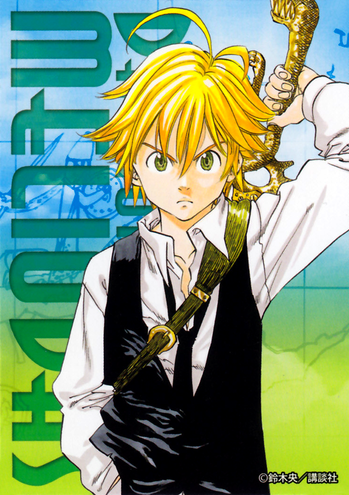

Meliodas「メリオダス」 é o líder dos Sete Pecados Capitais, carregando o título de Pecado da Ira do Dragão. Ele é o proprietário do renomado bar Chapéu de Javali, e o principal protagonista da série. O seu Tesouro Sagrado é a Espada Demônio Lostvayne e seu poder é o Full Counter. Ele também já usou o Mandamento do Amor e é o antigo líder dos Dez Mandamentos, um antigo membro do Stigma, e o filho mais velho do Rei Demônio.